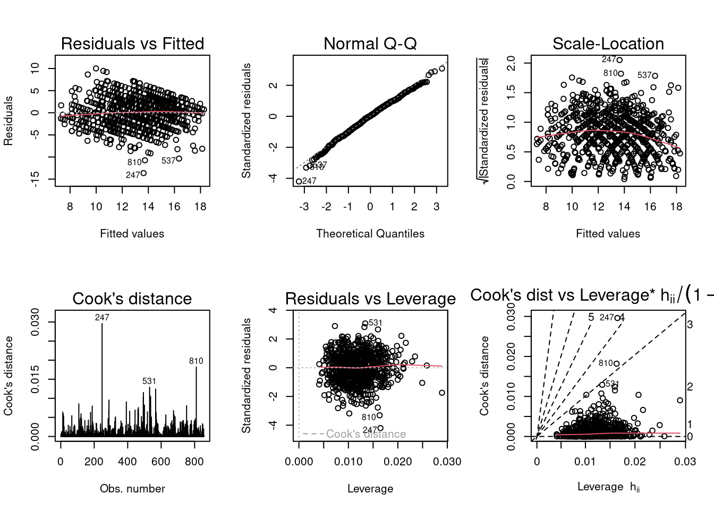

Code
library(tidyverse)
library(dplyr)
library(ggplot2)
library(stargazer)
performance<- read_csv("_data/CompleteDataAndBiases.csv")
knitr::opts_chunk$set(echo = TRUE)library(tidyverse)
library(dplyr)
library(ggplot2)
library(stargazer)
performance<- read_csv("_data/CompleteDataAndBiases.csv")
knitr::opts_chunk$set(echo = TRUE)Researchers have examined the differences impacting student achievement among genders for decades. Early meta-analyses conducted by Hyde (1990) revealed no significant difference between the groups’ cognitive abilities; yet intelligence and self-perception of ability, or self-esteem, were determined as the strongest predictors of academic success (Spinath et al., 2010, Booth and Gerard, 2011). Some research explains differences in achievement partially due to stereotype threat (ST). Stereotype threat, originally used to research the vulnerability of racial stereotypes on aptitude tests, is defined as “being at risk of confirming, as self-characteristic, a negative stereotype about one’s group” (Steele and Aronson, 1995). Conventional research has focused on gender differences to stereotype threat (Moè & Putwain, 2020), and two prevailing theories have emerged.
The first theory suggests that ST affects male and female students differently. Here male students achieve better outcomes when stereotype threat is present than stereotype lift (SL), and the reverse is true for female students who are adversely impacted by stereotype threat and positively impacted by stereotype lift (Johnson et al., 2012). Other studies debunk this theory suggesting no evidence of ST as a phenomenon in female students (Warne, 2022), particularly in the domain of mathematical achievement (Ganley et al., 2013). A second theory exists that the effects of ST may not be fully realized as outcomes immediately but affect achievement over time as chronic ST impacts working memory and intellectual helplessness in girls’ math scores (Bedyńska, Krejtz, and Sedek, 2019) and male language arts scores (Bedyńska, Krejtz, and Sedek, 2020).
This study tests both theories. First, it questions if there are differences in predicted student achievement based on gender when exposed to negative stereotypes about males and positive stereotypes about females. Second, it evaluates the effect of the perceived prevalence of stereotypes as shown by the participants’ exposure to three types of stereotype activation in predicting grades. The types of stereotype activation include:
None: Participants were not exposed to stereotypes during this experiment.
Case-based: Participants were shown three student profiles in which one female student had a high grade, and two male students had low grades.
Statistics: Participants were shown statistics suggesting boys performed less well in school than girls.
Hypotheses include:
H1. Exposure to negative stereotypes about male achievement (ST) and positive stereotypes of female achievement (SL) result in different responses to predicted achievement for both male and female students.
H2. There’s a difference between predicted male and female achievement based on the type of stereotype activation.
Data for this project was collected from Kaggle (Performance vs. Predicted Performance, 2022) and is a collection of existing student performance data from a study by Cortez and Silva (2008) on predicting secondary school student performance and the collector’s addition of stereotype activation for machine learning. The data included information on actual student demographics such as gender, parents’ highest level of education, as well as time studying vs. free time, number of absences, and grade on a final exam, among other variables.
A few important variables to define include:
Index - number of students included in the original and predicted data (N=856 of the original 991 students)
Participant ID - number associated with participants making predictions (N=107)
Sex - student’s sex (binary: ‘F’ - female or ‘M’ - male)
Studytime - weekly study time is categorized as 1= less than 2 hours, 2= 2-5 hours and 3= 5+ hours
Freetime - free time after school group as 1 = low, 2= medium, 3 = high
Goout - how often a student goes out with friends where 1 is very low and 4 is very often
Absences - number of school absences 1 - 7 where 7 represents any absences equal to or above 7
Walc - weekend alcohol consumption
Parents_edu - the higher of original variables mother’s edu and father’s edu, where 4 = the highest level of education
G3 - final grade (numeric: from 0 to 20)
Reason - The reason for why a student chose to go to the school in question. The levels are close to home, school’s reputation, school’s curricular and other
PredictedGrade - the grade participants predicted based on actual data and their exposed level of StereotypeActivation
StereotypeActivation - see three levels of stereotype activation above
Pass - A binary variable showing whether G3 is a passing grade (i.e. >=10) or not
PassFailStrategy - A binary variable showing whether the PredictedGrade is a passing grade (i.e. >=10) or not
An additional variable I added to the data set, STPresent, identifies whether stereotype activation was present (True or False) for participants when predicting student scores.
Below is a summary of the variables.
#view top 5 observations
head(performance, 10)# A tibble: 10 × 19
index Parti…¹ name sex study…² freet…³ roman…⁴ Walc goout Paren…⁵ absen…⁶
<dbl> <dbl> <chr> <chr> <dbl> <dbl> <chr> <dbl> <dbl> <dbl> <dbl>
1 132 1 Anna F 1 2 no 1 2 4 0
2 724 1 Mich… M 1 1 no 4 4 4 1
3 637 1 David M 1 2 no 4 2 2 0
4 884 1 Brian M 1 1 no 4 4 3 7
5 194 1 Jenny F 2 2 no 1 4 2 0
6 388 1 Oliv… M 2 2 no 1 1 4 1
7 65 1 Lisa F 2 3 no 2 3 4 1
8 303 1 Sarah F 3 3 yes 1 3 4 6
9 312 2 Oliv… M 3 2 yes 2 2 4 7
10 305 2 Lisa F 3 3 no 2 3 3 7
# … with 8 more variables: reason <chr>, G3 <dbl>, Pass <lgl>,
# PredictedGrade <dbl>, PredictedRank <dbl>, StereotypeActivation <chr>,
# Predicted_Pass_PassFailStrategy <lgl>,
# Predicted_Pass_RankingStrategy <lgl>, and abbreviated variable names
# ¹ParticipantID, ²studytime, ³freetime, ⁴romantic, ⁵Parents_edu, ⁶absences#Add column that distinguishes if stereotype activation is present
performance <-performance%>%
mutate(STPresent = case_when(StereotypeActivation == "CaseBased"| StereotypeActivation == "Statistics" ~ TRUE, StereotypeActivation=="None" ~ FALSE))
knitr::kable(summary(performance))| index | ParticipantID | name | sex | studytime | freetime | romantic | Walc | goout | Parents_edu | absences | reason | G3 | Pass | PredictedGrade | PredictedRank | StereotypeActivation | Predicted_Pass_PassFailStrategy | Predicted_Pass_RankingStrategy | STPresent | |
|---|---|---|---|---|---|---|---|---|---|---|---|---|---|---|---|---|---|---|---|---|
| Min. : 1.0 | Min. : 1 | Length:856 | Length:856 | Min. :1.000 | Min. :1.000 | Length:856 | Min. :1.000 | Min. :1.000 | Min. :1.000 | Min. :0.000 | Length:856 | Min. : 1.00 | Mode :logical | Min. : 0.00 | Min. :1.00 | Length:856 | Mode :logical | Mode :logical | Mode :logical | |
| 1st Qu.:241.8 | 1st Qu.: 27 | Class :character | Class :character | 1st Qu.:1.000 | 1st Qu.:2.000 | Class :character | 1st Qu.:1.000 | 1st Qu.:2.000 | 1st Qu.:2.000 | 1st Qu.:0.000 | Class :character | 1st Qu.:10.00 | FALSE:149 | 1st Qu.:10.00 | 1st Qu.:2.75 | Class :character | FALSE:170 | FALSE:284 | FALSE:264 | |
| Median :487.0 | Median : 54 | Mode :character | Mode :character | Median :2.000 | Median :2.000 | Mode :character | Median :2.000 | Median :3.000 | Median :3.000 | Median :2.000 | Mode :character | Median :12.00 | TRUE :707 | Median :14.00 | Median :4.50 | Mode :character | TRUE :686 | TRUE :572 | TRUE :592 | |
| Mean :486.9 | Mean : 54 | NA | NA | Mean :1.887 | Mean :2.183 | NA | Mean :2.284 | Mean :3.022 | Mean :2.854 | Mean :2.794 | NA | Mean :11.97 | NA | Mean :13.14 | Mean :4.50 | NA | NA | NA | NA | |
| 3rd Qu.:727.2 | 3rd Qu.: 81 | NA | NA | 3rd Qu.:2.000 | 3rd Qu.:3.000 | NA | 3rd Qu.:3.000 | 3rd Qu.:4.000 | 3rd Qu.:4.000 | 3rd Qu.:5.000 | NA | 3rd Qu.:14.00 | NA | 3rd Qu.:16.00 | 3rd Qu.:6.25 | NA | NA | NA | NA | |
| Max. :990.0 | Max. :107 | NA | NA | Max. :3.000 | Max. :3.000 | NA | Max. :4.000 | Max. :4.000 | Max. :4.000 | Max. :7.000 | NA | Max. :20.00 | NA | Max. :20.00 | Max. :8.00 | NA | NA | NA | NA |
#cross-tabulation of stereotype activation by gender
xtabs(~sex + STPresent, performance) STPresent
sex FALSE TRUE
F 132 296
M 132 296There is an even distribution of male and female students (428 each), with 69% of participants exposed to some type of stereotype activation during grade prediction. The actual and predicted rate of passing are similar, 707 students passed versus the predicted 686, approximately 83% to 80% respectively. This may suggest other variables as strong indicators in passing. There is, however, a notable difference in the average actual scores (11.97) and predicted scores (13.14). This is further emphasized by the median actual scores (12) and predicted median (14). This early finding suggest that although the rate of passing was slightly lower, the overall predicted scores are skewed higher than actual.
The next two graphs compare the actual final grade vs. the predicted grade for both genders.
ggplot(performance, aes(x=G3, fill=sex))+ geom_histogram(position = "dodge")+labs(x="Actual Final Grade (G3)", title= "Actual Grades by Gender")`stat_bin()` using `bins = 30`. Pick better value with `binwidth`.
ggplot(performance, aes(x=PredictedGrade, fill=sex))+ geom_histogram(position = "dodge")+labs(x="Predicted Final Grade (PredictedGrade)", title= "Predicted Grades by Gender")`stat_bin()` using `bins = 30`. Pick better value with `binwidth`.
In the first graph, there is a fairly normal distribution of actual grades for both male and female students. Male students are more concentrated near the median value of 10 while female students are skewed slightly higher near the 11 value. However, in the second graph of predicted grades for both groups, female students are skewed significantly higher near 15 points while predictions for male students spreads near 12 points. This study will investigate if stereotype activation is a possible explanation for this variance.
#boxplot of predicted grades by gender and if stereotype activation is present
ggplot(performance, aes(x=STPresent, y=PredictedGrade, fill=sex))+
geom_boxplot()+
theme(legend.position="none") +
labs(caption= "Red boxes represent female students. Blue boxes represent male students.")+
ggtitle("Predicted Grades by Gender and Presence of Stereotype Activation")
The chart above shows more variability in predicted grades for female students without any stereotype activation; yet once present, the concentration of scores skews higher. For male students, predicted scores increased in the presence of stereotype activation accounting for more low scores. Note, male scores were overall predicted lower than females independent of stereotype activation. Is there another variable contributing to this difference?
H1. Exposure to negative stereotypes about male achievement (ST) and positive stereotypes of female achievement (SL) result in differences in predicted achievement among both male and female students.
Here the dependent variable is the predicted grade and independent variable is presence of stereotype threat. The null hypothesis states stereotype activation does not have a statistically significant effect on predicted grades for male and female students and the alternative hypothesis is negative stereotypes about male achievement and positive stereotypes of female achievement result in changes in predicted grades among both male and female students.
I conducted a two directional, two sample t-test to investigate the differences in the mean predicted score for students with it labeled “TRUE” and without stereotype activation labeled “FALSE”.
t.test(PredictedGrade ~ STPresent, data= performance, alternative = c("two.sided"), var.equal = FALSE, conf.level = 0.95)
Welch Two Sample t-test
data: PredictedGrade by STPresent
t = 1.1314, df = 539.07, p-value = 0.2584
alternative hypothesis: true difference in means between group FALSE and group TRUE is not equal to 0
95 percent confidence interval:
-0.2409671 0.8955535
sample estimates:
mean in group FALSE mean in group TRUE
13.37121 13.04392 Although the mean predicted grades for those not exposed to ST are higher (13.37) compared to those where ST was present (13.04), the resulting p-value of 0.26, renders this test not significant in the predicted grades based on if stereotype activation was present. Thus, the null was retained.
H2. There’s a difference between predicted male and female achievement based on the type of stereotype activation.
The graph below calculates the mean predicted grade for both groups based on the type of stereotype activation.
knitr::kable(performance%>%
group_by(sex, StereotypeActivation)%>%
summarise(mean(PredictedGrade), mean(G3), mean(PredictedGrade)-mean(G3)))`summarise()` has grouped output by 'sex'. You can override using the `.groups`
argument.| sex | StereotypeActivation | mean(PredictedGrade) | mean(G3) | mean(PredictedGrade) - mean(G3) |
|---|---|---|---|---|
| F | CaseBased | 13.40441 | 12.18382 | 1.2205882 |
| F | None | 14.06061 | 12.25758 | 1.8030303 |
| F | Statistics | 14.50000 | 12.03125 | 2.4687500 |
| M | CaseBased | 11.96324 | 11.61029 | 0.3529412 |
| M | None | 12.68182 | 11.75000 | 0.9318182 |
| M | Statistics | 12.20000 | 11.98750 | 0.2125000 |
In the summary above, participants ranked the average predicted scores higher overall than the actual scores irrespective of gender or stereotype activation. The difference in predicted versus actual score was greatest among female students. Here participants exposed to the stereotype statistics predicted the widest difference compared to actual scores (2.47) and the highest overall scores (14.5).
For male students, predictions were closer to the average actual performance (11.75) ranging at a difference of 0.21 - 0.93 points. With no stereotype activation, males students garnered their highest predicted average at 12.68 suggesting introducing stereotypes negatively affected predictions in male students although still higher than actual performance. For female students, introducing statistics of lower male performance than females garnered the highest grade prediction for female students. For both genders, case based stereotype activation which included one example of a high female score and two examples of lower male scores produced the lowest predicted grades.
In the first model, I use PredictedGrade as the outcome or dependent variable and STPresent as the explanatory or independent variable adding in student sex as an interaction term.
model1<- (lm(PredictedGrade ~ STPresent * sex, data=performance))
summary(model1)
Call:
lm(formula = PredictedGrade ~ STPresent * sex, data = performance)
Residuals:
Min 1Q Median 3Q Max
-13.9966 -3.0126 0.0034 3.0034 7.9088
Coefficients:
Estimate Std. Error t value Pr(>|t|)
(Intercept) 14.06061 0.34139 41.186 <2e-16 ***
STPresentTRUE -0.06398 0.41052 -0.156 0.8762
sexM -1.37879 0.48280 -2.856 0.0044 **
STPresentTRUE:sexM -0.52662 0.58056 -0.907 0.3646
---
Signif. codes: 0 '***' 0.001 '**' 0.01 '*' 0.05 '.' 0.1 ' ' 1
Residual standard error: 3.922 on 852 degrees of freedom
Multiple R-squared: 0.04948, Adjusted R-squared: 0.04613
F-statistic: 14.78 on 3 and 852 DF, p-value: 2.165e-09Here we find in the absence of stereotype activation, gender is a statistically significant predictor of grades as represented by p-values far under 0.05. This model confirms earlier hypothesis testing results that mean predicted grades based on ST is not as significant but gender may play a role.
Until now, I investigated stereotype activation as the primary explanatory variable in predicting grades for both genders. However, in both my hypothesis testing and previous model, this variable was not significant in comparing scores with or without the presence of stereotype activation. This next model explores which of the other variables could explain this phenomena including gender as an interaction term.
Variables selected for exploration include:
Studytime - weekly study time is categorized as 1= less than 2 hours, 2= 2-5 hours and 3= 5+ hours
Freetime - free time after school group as 1 = low, 2= medium, 3 = high
Goout - how often a student goes out with friends where 1 is very low and 4 is very often
Absences - number of school absences 1 - 7 where 7 represents any absences equal to or above 7
Walc - weekend alcohol consumption
Parents_edu - the higher of original variables mother’s edu and father’s edu, where 4 = the highest level of education
knitr::kable(performance%>%
group_by(sex)%>%
summarise(mean(studytime), mean(freetime), mean(goout), mean(absences),mean(G3), mean(PredictedGrade)))| sex | mean(studytime) | mean(freetime) | mean(goout) | mean(absences) | mean(G3) | mean(PredictedGrade) |
|---|---|---|---|---|---|---|
| F | 2.065421 | 2.065421 | 2.992991 | 2.700935 | 12.14953 | 14.01636 |
| M | 1.707944 | 2.301402 | 3.051402 | 2.887850 | 11.79439 | 12.27336 |
The above tables summarize differences in the mean values for several variables of interest by gender. Female students score slightly higher in study time (2.07 vs. 1.7), but lower in free time (2.07 vs, 2.3), goout (3 vs. 3.05), and absences (2.7 vs. 2.9). These would suggest female students may have a higher predicted grade based on good practices which is proven by the actual grades in G3 (12.15 vs. 11.80). However, there is larger discrepancies in predicted rages (14.0 for females vs. 12.28 for males).
In the following model, PredictedGrade is the outcome, STPresent is the explanatory, student sex is the interaction term and the students’ behavior are the control variables.
model2<- (lm(PredictedGrade ~ STPresent * sex + (studytime + freetime + Walc + goout + Parents_edu + absences), data=performance))
summary(model2)
Call:
lm(formula = PredictedGrade ~ STPresent * sex + (studytime +
freetime + Walc + goout + Parents_edu + absences), data = performance)
Residuals:
Min 1Q Median 3Q Max
-13.6340 -2.1355 0.0962 2.2581 10.0129
Coefficients:
Estimate Std. Error t value Pr(>|t|)
(Intercept) 12.13164 0.68665 17.668 < 2e-16 ***
STPresentTRUE 0.13397 0.34288 0.391 0.6961
sexM -0.20778 0.41488 -0.501 0.6166
studytime 1.57533 0.16700 9.433 < 2e-16 ***
freetime 0.14047 0.15329 0.916 0.3597
Walc -0.64424 0.11055 -5.828 7.98e-09 ***
goout -0.29479 0.13614 -2.165 0.0306 *
Parents_edu 0.55721 0.10961 5.084 4.56e-07 ***
absences -0.41833 0.04136 -10.115 < 2e-16 ***
STPresentTRUE:sexM -0.90629 0.48551 -1.867 0.0623 .
---
Signif. codes: 0 '***' 0.001 '**' 0.01 '*' 0.05 '.' 0.1 ' ' 1
Residual standard error: 3.271 on 846 degrees of freedom
Multiple R-squared: 0.3436, Adjusted R-squared: 0.3367
F-statistic: 49.21 on 9 and 846 DF, p-value: < 2.2e-16Here the control variables have more significance as explanatory variables when compared to the intercept of female students with no stereotype activation present. This suggests behavioral factors are greater predictors than presence of stereotype activation.
library(stargazer)
stargazer(model1, model2, type= "text", title = "Predicting Student Grades by Stereotype Present, Gender, and Behaviors", style = "ajps", covariate.labels = NULL,
summary = NULL, out = NULL)
Predicting Student Grades by Stereotype Present, Gender, and Behaviors
-------------------------------------------------------------------
PredictedGrade
Model 1 Model 2
-------------------------------------------------------------------
STPresent -0.064 0.134
(0.411) (0.343)
sexM -1.379*** -0.208
(0.483) (0.415)
studytime 1.575***
(0.167)
freetime 0.140
(0.153)
Walc -0.644***
(0.111)
goout -0.295**
(0.136)
Parents_edu 0.557***
(0.110)
absences -0.418***
(0.041)
STPresentTRUE:sexM -0.527 -0.906*
(0.581) (0.486)
Constant 14.061*** 12.132***
(0.341) (0.687)
N 856 856
R-squared 0.049 0.344
Adj. R-squared 0.046 0.337
Residual Std. Error 3.922 (df = 852) 3.271 (df = 846)
F Statistic 14.784*** (df = 3; 852) 49.213*** (df = 9; 846)
-------------------------------------------------------------------
***p < .01; **p < .05; *p < .1 For this section, I evaluated a few assumptions with model 2 which aimed to predict grades by the type of stereotype activation and sex while controlling for behaviors.
#create matrix of model plots
par(mfrow = c(2,3)); plot(model2, which = 1:6)
Normality of Errors - In the Normal Q-Q plot, most observations fall close to the line assuming normality. Using the Cook’s Distance and Residuals vs. Leverage, we can assume residuals are mostly normal as well with the exception of observation #247 whose leverage makes it an influential observation.
Linearity - Viewing the Residuals vs. Fitted plot, we see a relatively straight and horizontal line suggesting the average residual for the fitted values are relatively similar. Note, there are three observations, #247, #810, and #537 that are identified as outliers.
Equal Variance of Errors - Although the Residuals vs. Fitted plot show a near equal variance of the error terms based on its straight and horizontal line, the Scale-Location plot shows a decreasing rather than flat trend as the fitted values increase.
In summary, stereotype activation has some influence in predicting higher scores for certain groups under certain conditions but was not a statistically significant predictor in grades for either male or female students based on this experiment. In this study, stereotypes favored female students over male students. Where this stereotype was present for both case based and statistic stereotypes, there was an increase in female predicted scores versus when ST was absent. Predictions for male grades also benefited from a higher predicted score when ST was absent. This does suggest there is some bias introduced with stereotype activation but not enough to be statistically significant in predicting grades.
A more robust model for predicting grades (model 2) incorporated student behavioral factors such as study time, weekly alcohol consumption, and number of school absences as well demographic factors such as parents education. Overall, participants generally predicted grades higher for both genders compared to actual but the average predicted scores were not statistically significant based on stereotype activation.
Bedyńska, S., Krejtz, I. & Sedek, G. Chronic stereotype threat and mathematical achievement in age cohorts of secondary school girls: mediational role of working memory, and intellectual helplessness. Soc Psychol Educ 22, 321–335 (2019). https://doi.org/10.1007/s11218-019-09478-6
Bedyńska, S., Krejtz, I., Rycielski, P. et al. Stereotype threat as an antecedent to domain identification and achievement in language arts in boys: a cross-sectional study. Soc Psychol Educ 23, 755–771 (2020). https://doi.org/10.1007/s11218-020-09557-z
Booth MZ, Gerard JM. Self-esteem and academic achievement: a comparative study of adolescent students in England and the United States. Compare. 2011 Sep;41(5):629-648. doi: 10.1080/03057925.2011.566688
Cortez, P. and Silva, A. Using Data Mining to Predict Secondary School Student Performance. In A. Brito and J. Teixeira Eds., Proceedings of 5th Future Business Technology Conference (FUBUTEC 2008) pp. 5-12, Porto, Portugal, April, 2008, EUROSIS, ISBN 978-9077381-39-7
Ganley, C. M., Mingle, L. A., Ryan, A. M., Ryan, K., Vasilyeva, M., & Perry, M. (2013). An examination of stereotype threat effects on girls’ mathematics performance. Developmental Psychology, 49(10), 1886–1897. https://doi.org/10.1037/a0031412
Hyde, Janet Shibley. “Meta-analysis and the psychology of gender differences.” Signs: Journal of Women in Culture and Society 16.1 (1990): 55-73.
Johnson, H., Barnard-Brak, L., Saxon, T., & Johnson, M.K. (2012) An Experimental Study of the Effects of Stereotype Threat and Stereotype Lift on Men and Women’s Performance in Mathematics, The Journal of Experimental Education, 80:2, 137-149, DOI: 10.1080/00220973.2011.567312
Moè, A., & Putwain, D. W. (2020). An evaluative message fosters mathematics performance in male students but decreases intrinsic motivation in female students. Educational Psychology, 1–20. https://doi.org/10.1080/01443410.2020.1730767
Spinath, B., Harald Freudenthaler, H., & Neubauer, A. C. (2010). Domain-specific school achievement in boys and girls as predicted by intelligence, personality and motivation. Personality and Individual Differences, 48(4), 481-486. https://doi.org/10.1016/j.paid.2009.11.028
Steele, Claude M., and Joshua Aronson. “Stereotype threat and the intellectual test performance of African Americans.” Journal of personality and social psychology 69.5 (1995): 797.
Warne, R. T. (2022). No Strong Evidence of Stereotype Threat in Females: A Reassessment of the Meta-Analysis. Journal of Advanced Academics, 33(2), 171–186. https://doi.org/10.1177/1932202X211061517
Data source: Anonymous. (2022). Performance vs. Predicted Performance[Data set]. Kaggle. https://doi.org/10.34740/KAGGLE/DSV/4282405